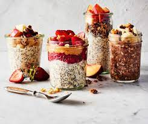

Overnight Oats

Ingredients
- Rolled Oats
- Milk
- Yogurt
- Chia Seeds
- Maple Syrup
- Optional: Protein Powder, Nut Butter, Fruit
Directions
- Stir it all together. In a small jar, stir
together the oats, milk, yogurt,
chia seeds, maple syrup, and
any other optional ingredient.
- Soak. Place the jar in the fridge to let
the oats soak for at least 2 hours,
though overnight is best.
- Add toppings and serve. The next morning, add your favorite
toppings
and enjoy! Alternatively, you can scoop the oats into a bowl
and add
toppings from there.